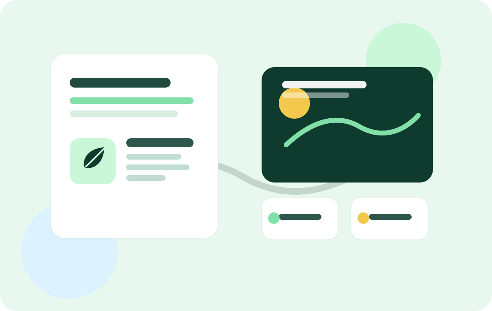

📣
PR-стратегия
Формируем цель кампании, аудитории, ключевые сообщения, медиакарту и календарь инфоповодов.
EcoPulse Media помогает социально ответственным брендам, городским проектам и некоммерческим инициативам превращать сложные экологические темы в понятные медиасообщения.

Мы соединяем аналитику, медиапланирование, работу со СМИ и визуальный контент, чтобы экологичные проекты звучали убедительно и регулярно попадали в повестку.
Формируем цель кампании, аудитории, ключевые сообщения, медиакарту и календарь инфоповодов.
Готовим материалы для журналистов, комментарии спикеров, справки о проекте и пост-релизы.
Разрабатываем сценарии коротких комментариев, роликов для соцсетей и аудиовизуальных фрагментов.
EcoPulse Media строит коммуникации вокруг конкретного общественного действия: события, исследования, запуска сервиса или партнерства.
Изучаем аудитории, тональность обсуждений и возможные репутационные риски.
Упаковываем идею в событие, новость, спецпроект или полезный городской сервис.
Работаем со СМИ, соцсетями, лидерами мнений и партнерскими площадками.
Мероприятие показывает, как компания может объяснить пользу раздельного сбора отходов через демонстрацию, экспертные комментарии и вовлечение жителей.
Форма демонстрационная: она показывает, как на сайте может быть организована коммуникация с посетителем.